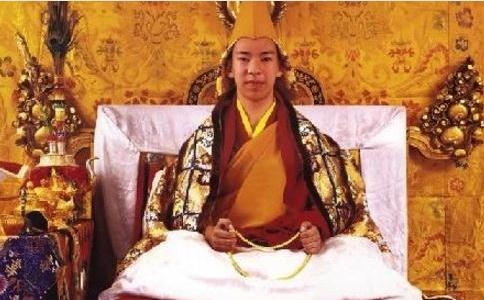

一九九五年十一月二十九日是一个吉祥
这天也是我第一次近距离地接触第十一世班禅。6岁的班禅活佛在众多的大人中，显得那么小，不得不站在桌子上与国务院特派专员罗干握手。在众多的大人中，这个小小的活佛又是那么沉稳，沉稳的令人震惊。仪式结束，他被簇拥着离开颇章时，我上前与他握了一下手，他对我淡淡地一笑。第十世
一九九五年十二月八日，在历世班禅大师驻锡地的日喀则扎什伦布寺，第十一世班禅额尔德尼．确吉杰布升座继任，举行了庄严隆重的坐床大典。这一
班禅转世系统即是藏传佛教格鲁派最重要的一支转世系统，历经几百年，至今已是第十一世。其中只有第十世班禅转世灵童的寻访认定，第十一世班禅坐床，是中华人民共和国成立后完成的。
西藏日喀则地区的扎什伦布寺是藏传佛教格鲁派在西藏南部地区最大的寺庙，始建于一四四七年。从四世班禅起，这里便成为历代班禅的住锡地。第十一世班禅额尔德尼在这里接受剃度，进入佛门，开始了自己的修行生活。时光荏苒，十几年来第十一世班禅晨钟暮鼓、刻苦学经一步一个脚印，朝向一代宗教领袖的圣坛稳步前行。
在班禅活佛的修行生涯中有几个重要的阶段。其中受
清晨5时30分，扎什伦布寺的数百名僧众聚集在措钦大殿，为十一世班禅
正式开始的授戒仪式秘不示人，我们无从看到。两个小时后，内殿大门缓缓打开，小活佛身穿一袭崭新的紫红色
此后，十一世班禅再度来到措钦大殿，首次登上大殿正中的历世班禅法座，领诵祈祷经。此时他学经不足半年，面对大殿中芸芸众僧，全神贯注，目光炯炯，领经时声音洪亮，吐字清晰；诵经时专心致志，口若悬河，一份超凡脱俗的庄严气度，与第十世班禅大师讲经时浑厚深沉、使人回肠荡气的共鸣之声如出一辙，连那微微噘起的嘴唇亦都酷似其前世。
殿内经声朗朗，抑扬顿挫；殿外幡旗猎猎，五颜六色，一派佛门圣地的吉祥景象。历时3个多小时，讲经活动方才结束。至此，第十一世班禅受戒仪式
一九九八年六月一日，藏历土虎年四月七日，是藏传佛教的一个吉祥的日子，这一天第十一世班禅在西黄寺中国藏语系高级佛学院接受了他修习生涯中的首次密宗“长寿灌顶”。
藏传佛教的教义中显密俱备，尤重密宗。修
十一世班禅面向上师跏趺而坐，诵经、
作为一位活佛，班禅与其它僧人一样，在艰苦的修行生活中遵守严格的作息时间。每天早晨6时半（夏日会更早些），早饭前的晨诵主要是把前一天学习过的经文念诵一遍，起到复习巩固的作用。早饭后的功课是一天中时间最长、最重要的，由经师指导进行。
十一世班禅的剃度经师是西藏佛教协会会长、代理甘丹赤巴波米．强巴洛珠。这位德高望重的藏传佛教大德如今已经圆寂了。另一位经师是扎什伦布寺的法相院堪布米玛石达，他是十一世班禅的启蒙经师，学问高深，不苟言笑，对班禅活佛的要求非常严格。
小活佛聪慧异常，悟性颇高，学习非常刻苦，经学的长进也很快。坐床几年后，已经学了《
在藏传佛教格鲁派寺院中，修习内容分显宗和密宗，随着修行的深入，班禅大师开始步入显宗《因明》、《般若》、《中观》、《俱舍》和《戒律》等“五部大论”的学习。对格鲁派的普通学经僧人来说，这“五部大论”的学习要达到规定的程度是不容易的，一般需历时二十多年的循序渐进，否则不能称之为博学者。指导这部分学习的经师是江洋嘉措经师。令经师欣慰的是，十一世班禅天资聪慧，加之勤奋用功，往往仅用半年时间，就学完一般僧人需用一年时间学习的内容。扎什伦布寺民管会主任喇嘛次仁也自豪地说，班禅大师一学就懂，他的聪明程度绝非常人可比。
练习辩经也是必不可少的一门功课。在藏传佛教寺院教育中，辩经和背诵经文是两种被广泛采用的主要学习方式。第十一世班禅活佛从小就喜欢辩经，14岁时他已经可以与扎什伦布寺显宗院的僧人就“五部大论”的一些内容进行辩经了。在与寺院高僧辩经的过程中，他一会儿据理力争，一会儿挠头沉思，一会儿含笑倾听，表情非常丰富。
班禅活佛聪颖过人，学习勤奋，加上他那一坐几个小时纹丝不动的功夫，和寺庙为他营造的浓厚的藏传佛教的文化氛围，使他的经文学习取得了超出预料的进步。班禅活佛曾经对我说，我的生活是比较忙。但从一个活佛的角度讲，我担负着很重大的历史使命。我要做有利于国家和人民的事。要为祖国统一、民族团结、人民幸福，为藏传佛教在同社会主义社会相适应的道路上
第十一世班禅在被认定和坐床以来，广受藏传佛教界僧俗信徒的拥戴。随着年龄渐长、学识渐进，除在西藏传法外，应四川、青海、甘肃、云南等省藏区及
对于第十一世班禅额尔德尼的认定坐床，藏传佛教界的高僧大德们深感欣慰。在拉萨
班禅活佛每到一地，都要为信教群众举行摩顶赐福仪式。群众闻讯手捧哈达，扶老携幼，等待摩顶赐福的队伍有时长达几公里。十一世班禅应信徒的请求接过他们的
作为一位佛教界人士，十一世班禅把广结善缘当作自己的一份义务和责任。十几年来他怀着悲悯之心，做了许多助人为乐的善事，捐助灾区人民，宽慰染疾的病人，对长者谦恭有礼，对儿童呵护友爱，见到小鸟和小猫、小狗等小动物时，他总要摸摸，抱抱，喂喂食。他把对父母、兄弟，对师长、教友的爱，扩展到对祖国、对同胞的爱。今年二月八日，第十一世班禅额尔德尼．确吉杰布以个人名义，向遭遇严重冰冻灾害的贵州灾区捐款3万元。
中央关心，胡主席亲提三希望第十一世班禅额尔德尼．确吉杰布十年来多次到北京拜见中央政府的领导人，汇报自己的修行、学习情况，听取他们的教诲。
按照历史定制，班禅在举行坐床仪式后，要向中央政府致谢，表示其感激之情。第十一世班禅坐床后，于当年年底晋京。一九九六年一月十二日，江泽民主席在中南海接受十一世班禅和扎什伦布寺致谢团的拜见。江泽民主席鼓励十一世班禅好好学习，健康成长，做一个拥护党的领导，热爱祖国，热爱人民，热爱社会主义，有渊博知识和佛学造诣，又具有现代科学文化知识的新一代爱国爱教的宗教领袖。班禅在听了江泽民主席的谈话后，用藏语和刚刚学会的简单的几句汉语对江泽民主席说，我一定好好学习，做一个爱国、爱教的活佛。
二00五年春节、藏历年之前，十一世班禅额尔德尼．确吉杰布在北京人民大会堂拜见了国家主席胡锦涛。此时的十一世班禅已经成长为一位英姿飒爽的少年活佛。更为重要的是，他的佛学和其它各方面的知识增长了，思想也在逐步走向成熟。
胡锦涛主席对第十一世班禅提出三点希望：希望他以十世班禅大师为榜样，继承和发扬爱国主义的光荣传统，为巩固民族团结和维护祖国统一做出自己的贡献，成为爱国爱教的典范；希望他加强自身修养，适应时代发展和社会进步的要求，牢记先辈的遗训，秉承佛教众生平等、慈悲为怀的理念，关注社会，心念众生，谦虚谨慎，护国利民，真正得到信教民众的爱戴；希望他继续加强对宗教和文化知识的学习，为藏传佛教与社会主义社会相适应做出积极努力。
拜见活动结束了，班禅的心久久不能平静，他提笔撰文，记录了这次难忘的拜见活动，文章的最后写道“我走出人民大会堂，胡主席的谆谆教诲依然在我耳畔回响，幸福的暖流依然在胸中激荡。胡主席代表党中央、国务院对我的亲切关怀不只是对我个人的关怀，更是对藏传佛教爱国人士和广大藏族同胞的关怀。今后，我将牢记胡主席对我的教导，更加刻苦地学习和修行，健康成长，决不辜负大家对我的厚望！”
今年一月三十一日，全国人大常委会委员长吴邦国在北京人民大会堂亲切接受了第十一世班禅额尔德尼．确吉杰布的拜见。吴邦国对班禅活佛说，你即将年满18周岁，这是人的一生中一个重要的新起点。希望今后积极探索藏传佛教与社会主义社会相适应的路子，发挥宗教界人士和信教群众在促进经济社会发展中的积极作用。
二00一年、二00七年，第十一世班禅作为宗教界的代表，分别列席了中共十六大、十七大的开幕式。坐在人民大会堂会场上的十一世班禅神情肃然，深深感受到这是国家和人民给予他的荣誉和信任。二00七年第十一世班禅额尔德尼在首届世界佛教论坛上发言，表白了自己的心声，他说护国利民是佛教对国家和社会做出的庄严承诺，千百年来藏传佛教传承爱国爱教的优良传统。十世班禅大师为国家的统一、民族的团结作出了杰出的贡献。在新的时代，我们应当肩负起